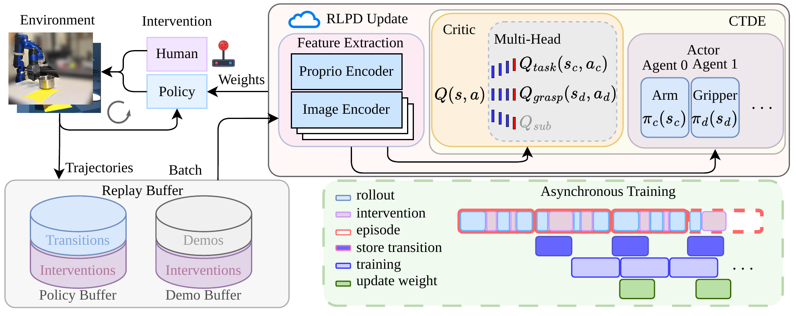

RLPD with prior data
Mini-batches contain equal amounts of prior demonstrations and online experience. Human interventions correct unsafe or ineffective behavior, while a high update-to-data ratio makes efficient use of every real-world transition.
Real-world reinforcement learning for robot manipulation
A human-in-the-loop framework that combines CTDE and Hybrid Reward Architecture to learn continuous arm motion and discrete gripper control directly on physical robots.
Decentralized execution
Centralized training
Hybrid reward architecture
Method overview. Two specialized actor-agents execute independently, while a centralized multi-head critic coordinates training.
Abstract
Real-world online reinforcement learning (RL) provides a promising approach for training robotic manipulation policies directly in the physical world, avoiding the sim-to-real gap and enabling continuous policy refinement through human-in-the-loop interaction. Recent methods have demonstrated sample-efficient learning through human intervention but remain limited to small randomization ranges and encounter challenges with the non-stationarity induced by concurrently training multiple agents. To address these limitations, we introduce a unified framework that combines centralized training with decentralized execution (CTDE) and a Hybrid Reward Architecture (HRA). This enables multiple actors to share a centralized multi-head critic. Specifically, we decouple continuous Cartesian arm pose control and discrete gripper control into two actor policies optimized under a centralized critic. The critic is decomposed into task and grasp heads, corresponding to the sparse task reward and a potential-based grasping reward, respectively. We accordingly reformulate the critic and actor objectives to exploit the decomposed Q-values while explicitly accounting for the categorical action distribution of the discrete gripper policy. Experimental results demonstrate that the proposed framework substantially improves both sample efficiency and policy performance. We validate our approach on two robotic arms and a simulated humanoid robot across tennis ball and banana pick-and-place, pot reset, and simulated block relocation tasks under dimension-wise domain randomization, approximately 5-25x larger than those considered in prior work. Compared with a state-of-the-art baseline, our method improves the success rate from 60% to 80% on tennis ball pick-and-place, from 60% to 90% on banana pick-and-place, and from 25% to 95% on simulated block relocation, while also successfully accomplishing a task where the baseline consistently fails.
Method
Human-guided online experience, hybrid-action CTDE, and reward decomposition work together to stabilize and accelerate learning.
Mini-batches contain equal amounts of prior demonstrations and online experience. Human interventions correct unsafe or ineffective behavior, while a high update-to-data ratio makes efficient use of every real-world transition.
Continuous SAC controls Cartesian arm pose and categorical discrete SAC controls the gripper. The actors execute from local observations, while a shared critic evaluates their joint action during training to mitigate multi-agent non-stationarity.
HRA assigns sparse task reward and potential-based grasp reward to separate Q-value heads. Their weighted sum trains both actors, giving each head a simpler, lower-variance target under noisy real-world visual and proprioceptive observations.

Results
The proposed method outperforms HIL-SERL across real-world and simulated manipulation tasks under large-scale randomization.
Evaluation success
Tennis-ball success improves from 60% to 80%, banana success from 60% to 90%, pot reset from 0% to 55%, and simulated block relocation from 25% to 95%. The three real-world tasks are trained for 160 minutes, improving the average success rate from 40% to 75%.
Sample efficiency
Counting the initial demonstrations as 20 equivalent episodes, our method uses 69, 76, 111, and 115 expert-equivalent episodes for tennis ball, banana, pot reset, and block relocation. HIL-SERL requires 80, 102, 132, and 189, respectively. Short corrective interventions focus expert effort on poor behavior and recovery.
Learning behavior
Twenty-episode running averages show success rates rising toward convergence while intervention rates and episode durations fall. Intervention rates ultimately reach 0%, indicating that the learned policies no longer require continuous expert supervision.
Videos
Evaluation comparisons are shown first, followed by the complete available training rollouts. Playback speed appears on each video.
Evaluation
Side-by-side evaluation rollouts compare HIL-SERL with HIL-HARC under the same task settings.
Simulation
50 × 40 cm randomization range
30 × 30 cm randomization range
40 × 40 cm randomization range
Training
Accelerated rollouts show the behavior of the baseline and HIL-HARC policies during online training. Bottle stowing was run with HIL-HARC only.
Simulation training progression
Training progression
65 minutes wall-clock training. HIL-HARC only
Resources
Publication and citation details for this project.
Citation